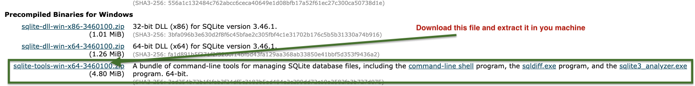
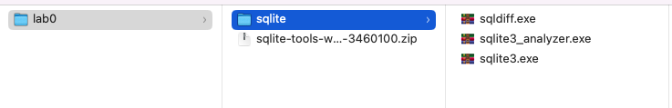

Know Your Tools
Overview
During this lab, you will get familiar with the most important tools that will be used during the course. These tools include (SQLite), (DB Browser), and (Google Colab) for Python.
SQLite and DB Browser
In this course, we will use SQLite and its graphical interface DB Browser to create and query DBMSs. During this lab, you will install and use the DB Browser or SQLite3. As an example for a database, we will use the Chinook database. To download the .sqlite file, open the Link and look for Chinook_Sqlite.sqlite and Chinook_Sqlite.sql. Right click on the link and Save Link As ... to download the file into a location of your choice.
For MAC users, sqlite is builtin command. To run sqlite just open your terminal and change the directory to your current working directory where you saved the database. To create a database, type the following command in the terminal:
shell$ sqlite3 Chinook
This command will create a file Chinook.db in the working directory. To check if the database has been created correctly, you can run .databases from the bash of sqlite3 as follows:
sqlite3sqlite3> .databases
If the database has been created correctly, you should see the following output:
Outputmain: /Users/.../Chinook r/w
Now, you can import the tables from the file Chinook_Sqlite.sql using:
sqlite3sqlite3> .read Chinook_Sqlite.sql
Chinook_Sqlite.sql and it is in the current working directory. Otherwise, you should specify the path to the .sql file.It will take a few seconds to import the database. After that, you can list the tables that exist in the database using:
sqlite3sqlite3> .tables
If the database was imported correctly, you should see the following list of tables:
However, if you have downloaded Chinook_Sqlite.sqlite, you cannot use .read. Instead, use .open because Chinook_Sqlite.sqlite is a binary database file and not SQL code (plain text).
Browsing the database in Chinook_Sqlite.sqlite: The file Chinook_Sqlite.sqlite contains the whole database so you can open it directly using:
shell$ sqlite3 Chinook_Sqlite.sqlite
then you can see the database and perform basic queries on it.
For MS-Windows user, download the file sqlite-tools-win-x64-3460100.zip from (SQLite) and store it a specific location (let us say infomdwr/lab0/).

Extract the downloaded file and the change the directory name to sqlite (as in the fingure).

After extracting the files, open the Windows PowerShell and change the working directory to the infowmdwr/lab0/sqlite directory that contains the sqlite executable files. Now you can follow the same steps as the MACOS users except that to run sqlite3, you need to use:
shell> ./sqlite3 Chinook
Instead of:
shell$ sqlite3 Chinook
for the MAC users.
In DB Browser, you can use the graphical interface to create the Chinook database. To import the database from the file Chinook_Sqlite.sql, open the File menu and select import > Database from SQL file .... Change to the location where you saved the file Chinook_Sqlite.sql and select it. You will be asked if you want to create a new database or not. Since we have created a new database, you select No. If the database is imported correctly, you will see the number of tables changed from 0 to 11.
Now, we need to get familiar with executing a simple SQL query that returns the names of the tables in the database. Unlike using sqlite3, we should use the Execute SQL tool. When selecting the Execute SQL, you will see a text box. Type the query:
SQLSELECT name FROM sqlite_schema
WHERE type ='table' AND
name NOT LIKE 'sqlite_%';
After executing the query, you should see a table with the names of the 11 tables in the database.
Google Colab for Python
For simplicity, we will use Google Colab for running the Python programs during the course. If you are familiar with other Integrated Development Environment such as Anaconda, PyCharm or Spyder, then use that IDE. Be careful that specific libraries may run only under a specific version of Python.
We will start by creating a new notebook and checking the version of Python that is already installed. We run the command:
python!python --version
If we need to install a different version of Python (e.g. 3.7), we can use:
python!apt-get install python3.7
Installing more Libraries
Most of the important libraries that we may need are already installed in the Google Colab environment. However, if you would like to install additional libraries, you can use the pip command. For example, to install py_stringmatching, you can use the command:
python!pip install py_stringmatching
! before the command (this is common for running system commands in any notebook environment).Running simple Python code
Run the following Python code and explain what the code is doing:
pythont, f = True, False
print(t and f)
print(t or f)
print(not t)